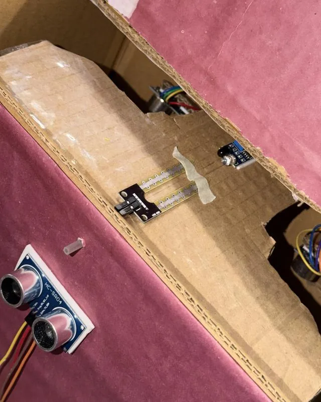
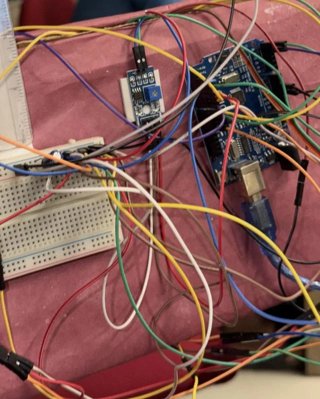
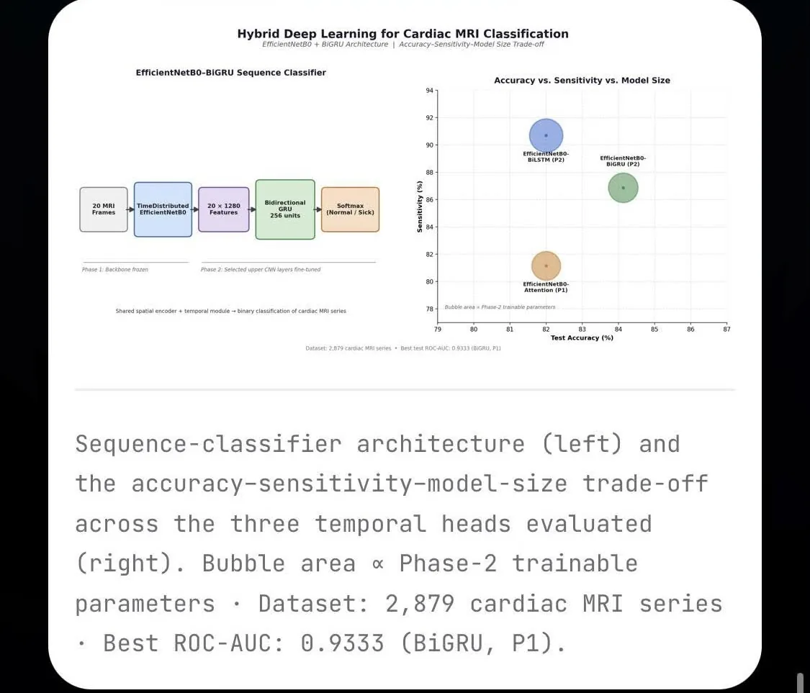

HrithikSoftware Engineer.
I'm a Computer Science & Engineering student at BRAC University who builds clean, purposeful software — from production web platforms to embedded systems and deep learning research. I care about the details that separate a working product from a well-made one.
View WorkGet in Touch
Projects
Selected work, from production platforms to small tools used by students.
Ominelle
Production-grade e-commerce platform actively used by real users and adopted by a company. Built for reliability and real-world scale.
Visit Platform ↗Text to Handwritten
Convert typed text into handwritten-style notes instantly. A unique tool used by students and creators worldwide.
View Project ↗StudyMate+
Smart study companion with an AI-powered flashcard generator, interactive quiz maker, and focus timer.
View Project ↗Skincare Bot
Interactive skincare recommendation assistant that helps users find the right routine through guided questions.
View Project ↗Avengers Health Monitor
Superhero-themed health monitoring application with interactive tracking and real-time UI updates.
View Project ↗Doraemon Tic Tac Toe
Polished Doraemon-themed game with smooth animations and a player-vs-player mode.
View Project ↗Certificate Corner
A curated archive of my certifications and course completions across web development, AI, and programming — proof of continuous, hands-on learning.
View Certificates ↗Education
Background
BRAC University
B.Sc. in Computer Science & Engineering (CSE) — Undergraduate
Dhaka Imperial College
Higher Secondary Certificate — Science
National Ideal School
Secondary School Certificate — Science
Skills & Expertise
Technical skills and the subjects I've studied.
Hardware Projects
Hands-on lab and coursework at BRAC University — applying theory to real circuits and embedded systems.

PoultryGuardian IoT · Embedded Systems
Smart automated poultry farm monitoring system — monitors temperature, humidity & gas levels, automates feeding/watering, and prevents disease through real-time environmental control.
Societal Impact
- Helps small farmers adopt smart farming affordably
- Supports food security & steady poultry supply
- Motivates youth to see farming as a viable career
Health & Safety
- Reduces ammonia & harmful gas exposure for farmers
- Prevents poultry disease via environment control
- Circuit fuses & manual override ensure fail-safe ops
Legal & Cultural
- Aligns with Bangladesh biosecurity & livestock laws
- Tech as a helper, not a replacement for farmers
- Reduces workload for women managing home poultry


Touchless Smart Bin Arduino · Sensors & Actuators
Hands-free dual-compartment bin that opens when it detects your hand, confirms the drop with an IR sensor, then sorts wet vs dry waste using a moisture probe and a servo-tilted flap. Two ultrasonic sensors show each compartment's fill level on an I²C LCD. I wrote the complete Arduino firmware — state logic, ultrasonic timing, IR timeout, dual-servo control and the anti-stick jiggle routine.
Environmental
- Source-level sorting keeps dry recyclables uncontaminated
- Separated wet waste is ready for composting
- Servo detach logic cuts standby power & vibration
Health & Hygiene
- Touchless lid limits contact-spread of pathogens
- Less mixed-waste handling for sanitation workers
- Fits campuses, public restrooms & hospitals
Limits & Next Steps
- SG90 plastic gears struggle with heavy items
- Metal foil can fool the resistive moisture probe
- Next: capacitive/inductive sensing + ESP32 cloud telemetry
B.Sc. Thesis
Research

Cardiac MRI captures the heart in motion, but most classifiers only look at a single frame at a time. This thesis builds a sequence-aware pipeline that reads a full 20-frame cardiac MRI series and classifies it as Normal or Sick — using a shared EfficientNetB0 backbone to extract per-frame features, paired with three interchangeable temporal heads: BiLSTM, BiGRU, and Multi-Head Self-Attention.
Trained and evaluated on 2,879 real cardiac MRI series across three data-split strategies, the models were benchmarked on clinically meaningful metrics — sensitivity, specificity, ROC-AUC, and PR-AUC — with Grad-CAM visualizations confirming the models focus on actual cardiac anatomy rather than noise.
Contact
Open to internships, collaborations, or a conversation about tech. I usually reply within 24 hours.